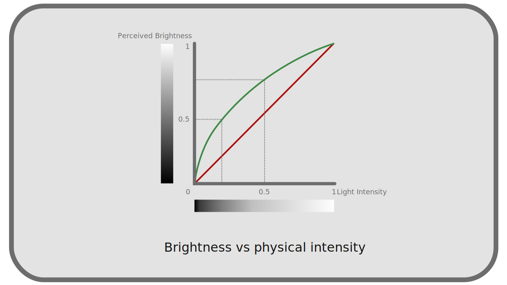
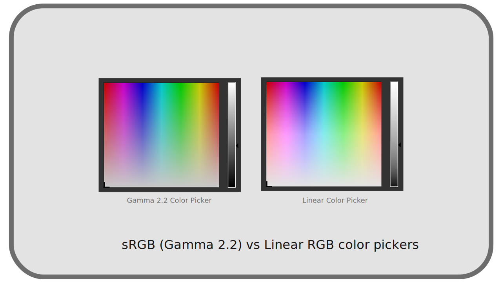
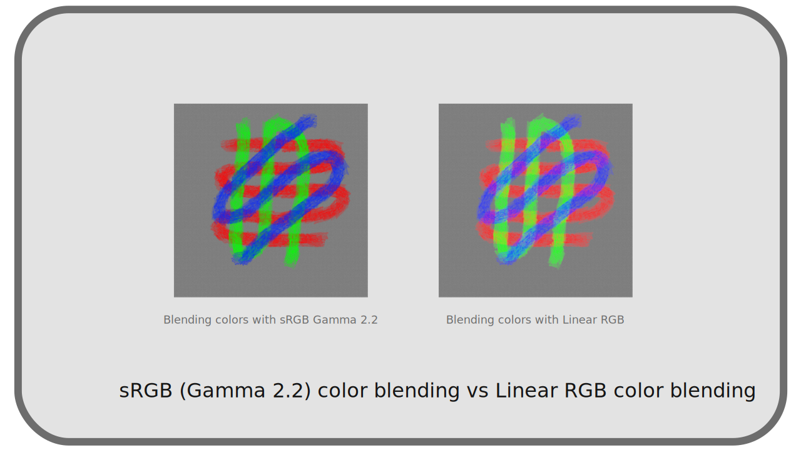

I.L - Courbes de transfert, espace linéaire et gamma¶
Quand l’œil humain perçoit les couleurs, il distingue mieux les contrastes dans les faibles intensités, les ombres, que dans les lumières fortes ; autrement dit, la réponse à l’intensité n’est pas linéaire (proportionnelle) 1 : une lumière que l’on perçoit à “la moitié” de l’intensité d’une autre lumière n’est pas réellement et physiquement deux fois moins intense, mais plutôt quatre fois moins intense. cf. chapitre C - Perception de la lumière et des couleurs par l’être humain.

Pour optimiser la quantité de données et la qualité des images en vidéo, puis plus tard en image numérique, au lieu de représenter la lumière de manière physique, on a donc utilisé des courbes de transfert non-linéaires, qu’on appelle une correction gamma2 dans sa forme simple3, qui simule cette perception non-linéaire de la vision humaine et permet de stocker les valeurs telles qu’elles sont perçues.
Les espaces colorimétriques définissent donc chacun leur propre courbe de transfert, et on a aussi souvent la possibilité de linéariser les espaces utilisés comme espaces de travail dans les applications, pour se rapprocher de la lumière physique le temps du travail (et simplifier les calculs).
L’intérêt des espaces non-linéaires est donc double : comme espaces pour le stockage et pour la diffusion, ils permettent de limiter la quantité de données sans perte visible de qualité ; comme espaces de travail, ils permettent de travailler avec des valeurs et des sélecteurs de couleurs intuitifs, qui fonctionnent de la même manière que notre perception des couleurs.

La sélection de couleurs sombres est bien plus difficile en linéaire, tandis qu’avec un gamma l’échelle de luminosité parait plus régulière et logique.
Les espaces linéaires ont cependant aussi leur intérêt : ils simplifient les calculs (pour les développeurs), et en simulant la lumière réelle et physique permettent notamment aux moteurs de rendus 3D de générer efficacement des images réalistes. En deux dimensions aussi, les espaces linéaires permettent de meilleurs calculs dans la fusion des couleurs (les différents types de transparences) et règlent les problèmes de franges apparaissant dans certains mélanges de couleurs, permettant des mélanges plus réalistes, plus logiques.

Remarquez comme les couleurs se mélangent de manière plus naturelle en linéaire, notamment le bleu dans le rouge qui tire sur le magenta, et surtout comment les mélanges ne s’assombrissent et ne désaturent pas les couleurs.
Note
Il est important de bien noter que choisir un espace linéaire pour stocker (et travailler) les images impose une profondeur de couleur plus grande, afin de garder la qualité lors de la conversion vers les espaces non-linéaires d’affichage et de diffusion.
Sources et références
-
On parle de “linéaire” parce que la représentation graphique de la fonction mathématique faisant correspondre à une intensité physique donnée sa perception humaine serait une fonction affine, proportionnelle, représentée par une ligne droite. ↩
-
En réalité, la correction gamma a été créée pour compenser le fait que l’intensité lumineuse des premiers écrans à tubes cathodiques n’était pas non plus linéaire. Mais en numérique, la correction gamma est bien utilisée dans le but d’optimiser le stockage et le débit des données. Que cette correction gamma moderne soit proche de celle utilisée avec les anciens écrans est à la fois un hasard et le résultat de l’ingénierie qui a visé à simplifier le processus. ↩
-
La correction gamma
γn’est pas la fonction GammaΓdes mathématiques, mais une simple fonction utilisant une puissance (souvent proche du carré, les gamma les plus courant variant autour de la valeur2). ↩